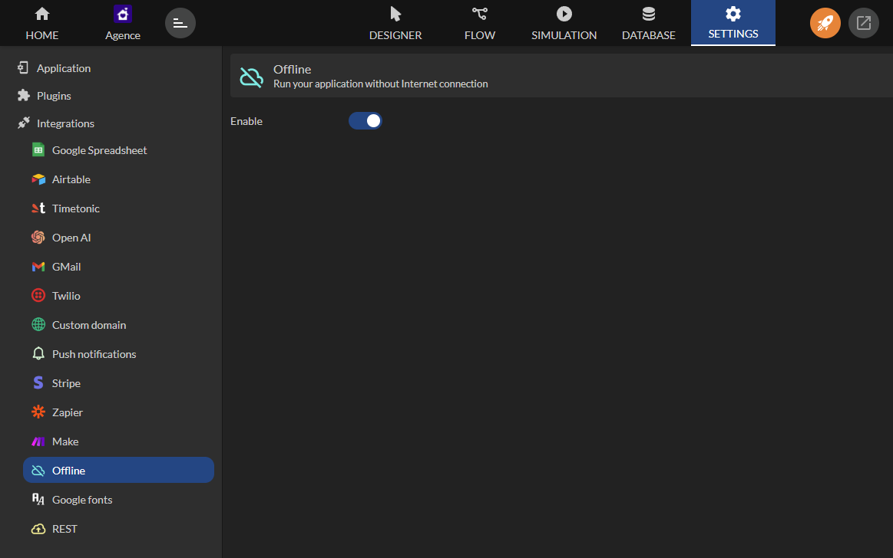

Mode déconnecté offline
Le mode Offline de votre application mobile permet d'utiliser l'application sans connexion Internet.
Disponible depuis le plan Enterprise.
Ce mode est particulierement utile pour les utilisateurs qui se trouvent dans des zones avec une connexion instable ou inexistante. Voici les etapes detaillees pour activer et utiliser le mode Offline.
Activation du mode offline
Depuis Zyllio Studio, ouvrez votre application mobile et accedez a la section Settings.
Vous trouverez une option intitulee Offline, activez le bouton Enable pour permettre le fonctionnement de l'application sans connexion Internet.

L'activation du mode Offline seule ne suffit pas pour commencer a utiliser l'application en mode hors-ligne. Une synchronisation initiale est necessaire pour telecharger les donnees necessaires a l'utilisation deconnectee.
Synchronisation des donnees
Une fois le mode Offline active, il est imperatif de synchroniser les donnees pour pouvoir utiliser l'application correctement hors ligne. Cette synchronisation telecharge les donnees necessaires afin qu'elles soient disponibles sans connexion.
Un bouton de synchronisation est necessaire, ce bouton peut etre place sur l'ecran que vous jugez le plus pratique pour l'utilisateur, tel que l'ecran d'accueil ou un ecran specifique a la gestion des donnees.

Le bouton de synchronisation utilise l'action Offline sync qui ne necessite pas de parametrage particulier.

Utilisation en mode offline
Cliquez sur le bouton Synchroniser (ou Sync) pour lancer la synchronisation des donnees. Une fois cette operation effectuee, toutes les informations necessaires a l'utilisation de l'application seront stockees localement sur votre appareil.
Apres la synchronisation, vous verrez un message de confirmation indiquant que la synchronisation a ete effectuee avec succes. Vous pouvez maintenant utiliser l'application sans connexion Internet.
Lorsque l'application est connectee au reseau, le mode offline est toujours operationnel. Cependant il priorise les informations online lorsque disponible et met a jour son cache offline.
Limitations
Actuellement, les mises a jour automatiques de l'application en mode Offline ne sont pas prises en charge.
Si vous avez un besoin urgent de mises a jour specifiques ou d'une fonctionnalite liee aux mises a jour en mode Offline, nous vous invitons a soumettre votre demande directement au Product Manager via le forum Slack dedie au produit.